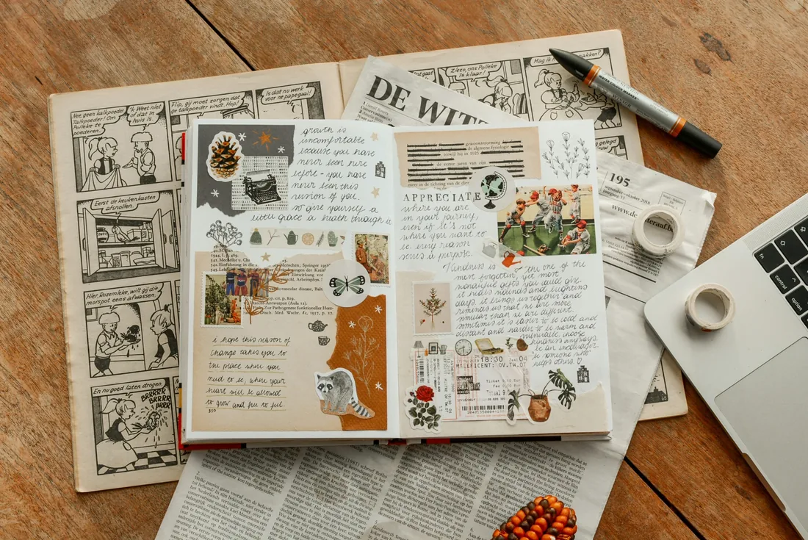
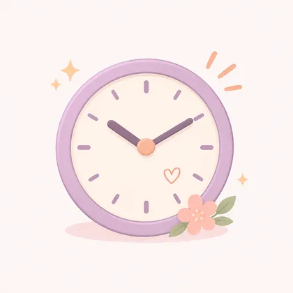
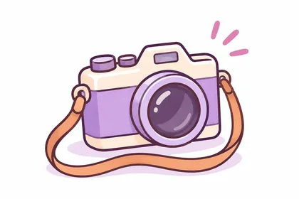
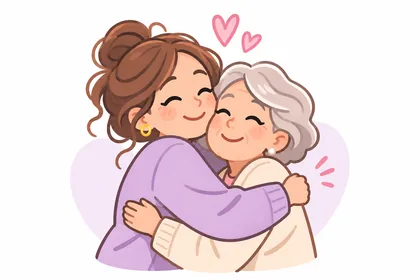
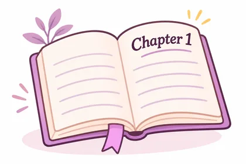
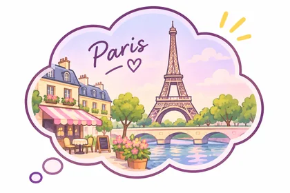

JOURNAL PROMPTS
100 journal prompts for the moments that matter.
A good journal entry can begin with one simple question. Explore 100 thoughtful prompts about everyday joys, favourite photos, people you love and memories you want to keep.
Get Stillkeep free on iPhone ↗
FIND A LITTLE INSPIRATION
Not sure where to begin?
Pick a theme or tap Surprise me. Your next journal entry might be one question away.
What was the brightest little moment of my day?
No account needed. The full list of 100 prompts is below.
THE JOURNAL PROMPT LIBRARY
100 prompts, five meaningful themes.
Choose a question, write a few sentences and keep what matters to you. There are no right answers.

For today
Notice the good things hiding in ordinary days.
- What was the brightest little moment of my day?
- What made me laugh when I least expected it?
- When did I feel most like myself today?
- What everyday comfort did I enjoy?
- What conversation would I like to remember?
- What did I notice on my way somewhere?
- What went better than I expected?
- What kind thing did someone do for me today?
- How did I make someone else’s day easier?
- What small win deserves a little celebration?
- What did I hear, smell or taste that I loved?
- What would I tell a friend about today?
- When did I slow down and enjoy the moment?
- What did I try that felt new or different?
- What helped me feel comfortable or at ease?
- What did I find beautiful in an ordinary place?
- What am I proud of doing, even if it was small?
- What would make a lovely caption for today?
- Which part of today would I happily repeat?
- What one thing do I want to carry into tomorrow?

For your photos
Give your favourite pictures the stories they deserve.
- What happened in the five minutes before this photo?
- What sound would bring this picture to life?
- Who was behind the camera, and what were they saying?
- What tiny detail might I forget in a year?
- What made me reach for my camera?
- How did the place feel when I was standing there?
- What was the best thing about this outing?
- What happened right after I took this picture?
- Which person in this photo has a story worth telling?
- What was I thinking about in this moment?
- What detail in the background makes me smile?
- What was the weather like, and did it matter?
- What did we eat, listen to or talk about that day?
- How would I describe this photo without mentioning what it shows?
- What might someone be surprised to learn about this moment?
- What is the story behind a favourite blurry picture?
- Which photograph reminds me of feeling brave?
- What made this ordinary scene worth saving?
- What would I want my future self to know about this day?
- If this photo had a title, what would it be?

For people you love
Celebrate the people who make life feel richer.
- What habit of theirs always makes me smile?
- What is a small kindness I remember from them?
- Which conversation with them still makes me laugh?
- What song, meal or place reminds me of us?
- When did we turn an ordinary day into an adventure?
- What have they taught me without realising it?
- What do I admire about the way they see the world?
- What is our funniest shared memory?
- What tradition would I love us to keep?
- What would I put in a photo album just for us?
- When have I felt especially understood by them?
- What do we always end up talking about?
- What is one thing I hope they know I appreciate?
- What small moment tells the story of our friendship?
- How have we grown or changed together?
- What is their most wonderfully specific quirk?
- What place feels more special because we went there together?
- What memory would I love to hear from their point of view?
- What could I thank them for this week?
- What are we looking forward to doing together?

For a new chapter
Start your next season with curiosity and kindness.
- What am I most excited to discover next?
- What is something new I want to welcome into my life?
- What would a good first page of this chapter say?
- Which strengths can I bring with me?
- What simple ritual would make this season feel special?
- What is one small adventure I want to plan?
- What am I curious to learn?
- Which person could I spend more time with?
- What would I like my days to feel like?
- What part of my old routine is worth keeping?
- What would be a kind goal for the next month?
- What is one thing I can celebrate about how far I have come?
- What place am I excited to explore?
- How could I make room for more play?
- What new memory would I like to create?
- What does a lovely ordinary week look like to me?
- What small change would make life a little brighter?
- What might I say yes to more often?
- What would I like to document as this chapter unfolds?
- What title would I give this season of my life?

For looking back
Make room for the memories that shaped you.
- Which childhood afternoon can I still picture clearly?
- What place once felt like a second home?
- What holiday memory still makes me smile?
- Who taught me something I still use today?
- What family saying always brings someone to mind?
- What was my favourite thing to do after school?
- Which old photograph has a story no one else knows?
- What food instantly takes me back to a particular time?
- What was a tiny triumph I was proud of years ago?
- Which old friendship deserves a moment of gratitude?
- What did an ordinary weekend used to look like?
- What music takes me straight back to a happy memory?
- What tradition from my past would I like to revive?
- Which trip changed how I saw a place?
- What did I love about the neighbourhood where I grew up?
- What would my younger self be delighted to know about today?
- When did something unexpected become a favourite memory?
- What little detail from a loved one do I want to preserve?
- What moment would I like to tell as a story one day?
- If I could revisit one ordinary hour, which would it be?
A gentle tip: Start with one prompt and write two or three honest sentences. A tiny memory often becomes a favourite one later.
HERE’S WHAT AN ANSWER COULD LOOK LIKE
It doesn’t need to be a long story.
“What was the brightest little moment of my day?”
“We stopped for coffee on our walk home and ended up staying an hour. I took a photo of the sunlight on the table because it felt like one of those small, perfect afternoons.”
Just a few honest lines can bring a photo back to life. You can keep the picture and its story together in Stillkeep.

Keep the stories you want to remember.
Find a prompt that feels right, add a few words to a favourite photo, and save the memory in Stillkeep for iPhone.
Download on the App Store ↗ On a computer? Scan with your iPhone.
On a computer? Scan with your iPhone.